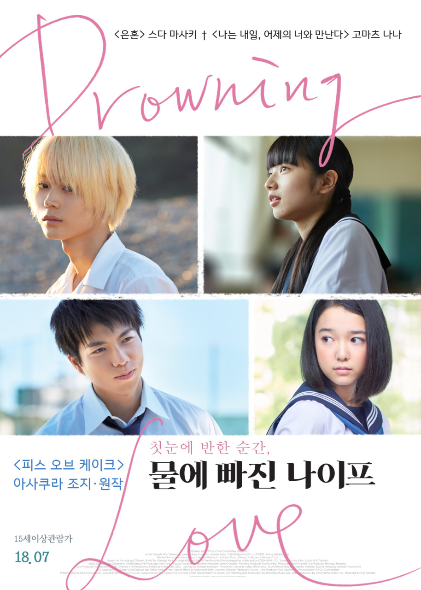

TITLE
물에 빠진 나이프
ORIGINAL TITLE
溺れるナイフ
GENRE
Romance · Drama
MY RATING
★★★★☆
My Review
스토리만 놓고 보면 내가 좋아하는 스타일의 영화는 아니었다. 정상적인 연애를 하는 인간이 없고, 보다 보면 쟤네는 대체 왜 저러나 싶은 순간도 많았다. 영화 자체의 느낌은 화면이 예쁘고 여름의 습하고 뜨거운 느낌이 그대로 느껴져서 내용보다 장면들이 더 오래 기억에 남는다.
.